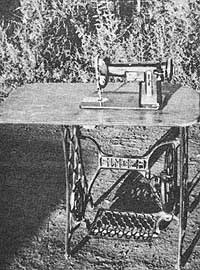
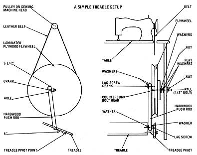

Even though high technology seems to be sticking its nose into more and more facets of daily life, some old-fashioned ways of doing things never go out of style.
My mother purchased her first electric sewing machine in 1949 . . . and consequently sold her outdated (but trusty) old treadle stitcher for five dollars. I suppose she was convinced, at the time, that the "modern" way was better. However, since then the price of electricity has come to be as big a budget consideration as a family vacation. And after 30 years of inflation had taken its toll on my lifestyle, I bought-in 1979-a secondhand cast-iron frame from a Singer treadle-powered machine for $20. Not very long after that, my mother-in-law presented me with an old electric sewing machine "head" she had put away some years before . . . and by putting both components together, I came up with a very fine tool I never have to plug in!
The only real difference between an electric and a treadle sewing machine, you know, is the means by which the mechanism is turned. The first type employs a motor . . . whereas the second requires nothing but good old muscle power to turn the flywheel. In either case, a belt-and-pulley assembly usually transfers the power to the machine's main shaft.
HOW A TREADLE WORKS
A treadle is actually a big pedal that one tips back and forth by applying pressure with both feet. This action causes a push rod to move up and down . . . which cranks a flywheel . . . which turns a leather belt . . . which supplies power to the main shaft. (The flywheel is able to revolve in either direction, so it's impor tant to get it turning correctly every time you begin to sew.)
If you decide to stitch with foot power but have difficulty locating a factory-made frame, such as the one I 'found, the accompanying diagram should help you to build your own . . . from plywood, planks, and rebar or what have you. Just bear in mind that [1] the axle must be firmly fixed, [2] the flywheel has to be free to turn (but It shouldn't wobble), and [3] the treadle must be pivoted on both ends.
THE SEWING MACHINE HEAD
The term "head" refers to the actual sewing mechanism. All the other com ponents function either to hold the head in place or to turn its main shaft. (Older sewing machine models have the pulley on the outside of the mechanism, but some newer models have pulleys on the inside and are therefore more difficult to adapt to foot power.)
The machine I "inherited" from my mother-in-law had been stored in a leaky shed for some 20 years, so it was more than a little rusty when she gave it to me. I soaked the mechanism with WD-40 (a spray-on penetrating oil) but none of the moving parts would budge. So I tried holding a hardwood stick against various parts of the inner workings and beating the wood with a hammer. A few parts moved a bit at that point. Finally, I oiled the whole thing again and set the head aside for a day or so. By the next evening I was able to turn the flywheel by hand . . . and the machine was ready to adapt to my frame.
THE TABLE IN BETWEEN
When using a sewing machine, a person must have a smooth, flat surface on which to work . . . so I had to put a tabletop between the head and the frame. I used a scrap of nice plywood for it (after first rounding off all the corners).
To insure a proper fit, it's a good idea to set the sewing machine head on the plywood . . . and then draw around the protruding sections beneath the unit's thin "stitching surface". Cut a hole following the marks . . . and if the unit doesn't slide in just right at first, file the wood to a fine fit with a rasp. (The lower workings of the head slip through the hole, while its flat upper section should rest on the plywood.) Finally, fasten the table to the frame by driving four screws in from below. The head itself is not actually fastened anywhere, but its weight will hold it securely in place.
WHAT MAKES IT ALL GO ROUND
Although at this point my recycling project looked like a treadle sewing machine, it still wasn't functional because I hadn't added the belt. I obtained an inexpensive leather drive belt from Newark Dressmaker Supply (Dept. TMEN, 4616 Park Drive, Beth, Pennsylvania 18014), and drilled two large holes in the table for it to pass through. After the machine itself was in complete working order, I noticed that the bobbin and its carrier were missing. Fortunately, I was able to use standard replacements, which I found at the local Sears store.
AND SEW ON...
I've discovered that most electric sewing machines can be converted to pedal power, and that even badly abused "heads" can often be restored to service. And since a treadle is not difficult to manufacture at home, why not take a load off your utility bill and reacquaint yourself with a more self-sufficient way of stitching?
|
 |
 |
|